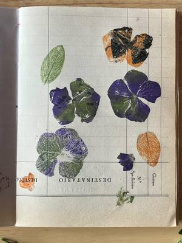
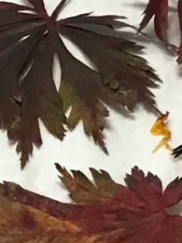
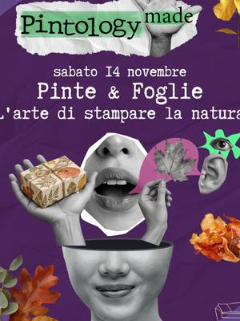
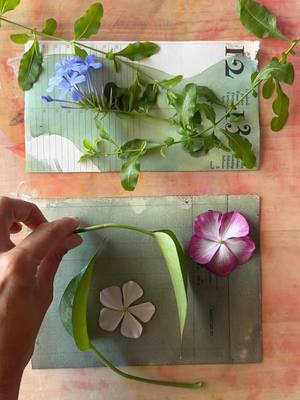
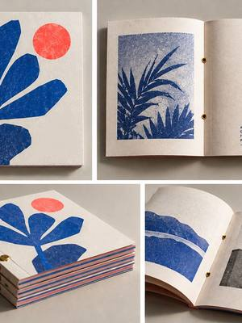
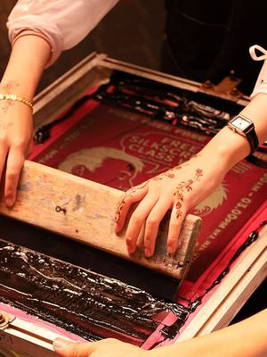
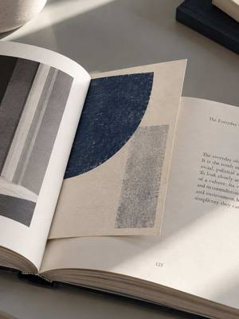
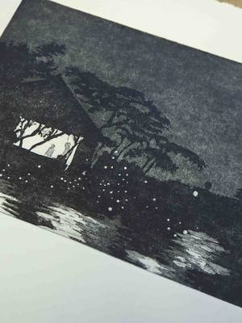

Printing workshops in Turin and around
Screen printing, cyanotype, etching, risograph and botanical printing workshops and courses in Turin and around.
Search all workshops14 activities coming up · updated on 27 October 2026
- from2novPrintingCyanotype course: printing with lightfrom Monday 2 November to Monday 23 November, every Monday, 18:30–20:30Aurora (TO) · 70 €with Officine Creative Torino
- from3novPrintingScreen printing course: T-shirts and paperfrom Tuesday 3 November to Tuesday 24 November, every Tuesday, 19:00–21:00Aurora (TO) · 90 €with Officine Creative Torino

sat7novPrintingBlock Party: carving and fabric printingSaturday 7 November, 15:30–18:30Aurora (TO) · 35 €with jstofphotography at Velvet Truffle Riot sun8novPrintingBotanical printing: the basicsSunday 8 November, 10:00–13:00San Donato (TO) · 55 €with Patrizia Berto (Startlap) at Orso Objetos
sun8novPrintingBotanical printing: the basicsSunday 8 November, 10:00–13:00San Donato (TO) · 55 €with Patrizia Berto (Startlap) at Orso Objetos
sat14novPrintingImpressioni: ecoprint on a silk scarfSaturday 14 November, 10:00–18:00Borgo San Paolo (TO)with Patrizia Vayola at Pangramma
sat14novPrintingPints & Leaves: botanical prints on paperSaturday 14 November, 10:00–13:00San Donato (TO) · from 20 €with Pintology with Laudisia Colonnelli
sat14novPrintingBotanical Prints: cyanotype with plantsSaturday 14 November, 10:00–13:00Aurora (TO) · 35 €with jstofphotography at Velvet Truffle Riot sun15novPrintingBotanical printing: the colour blanketSunday 15 November, 10:00–13:00San Donato (TO) · 55 €with Patrizia Berto (Startlap) at Orso Objetos
sun15novPrintingBotanical printing: the colour blanketSunday 15 November, 10:00–13:00San Donato (TO) · 55 €with Patrizia Berto (Startlap) at Orso Objetos
sat21novPrintingOne Day Riso Book: your risograph bookSaturday 21 November, 09:30–17:30Lingotto (TO) · 80 €with Print Club Torino
thu26novPrintingScreen-printed socks: Christmas giftsThursday 26 November, 18:30–20:30Vanchiglia (TO)with Nodo Tufting Torino
sat28novPrintingRisograph postcards: between the pagesSaturday 28 November, 10:30–12:30Borgo Po (TO) · 20 €with Print Club Torino
from29janPrintingPrintmaking masterclass: etching and morefrom Friday 29 January, 09:30–17:30Lingotto (TO) · 370 €with Giancarlo Busato at Print Club Torino- from19febPrintingpassoA2 masterclass: drawing and animationfrom Friday 19 February to Sunday 21 February, 18:30Lingotto (TO) · 300 €with Margherita Premuroso at Print Club Torino
 dateof your choicePrintingLinocut: make your own stampDate of your choiceSan Salvario (TO) · from 40 €with Mosca Bianca di Gaia Sandrelli
dateof your choicePrintingLinocut: make your own stampDate of your choiceSan Salvario (TO) · from 40 €with Mosca Bianca di Gaia Sandrelli